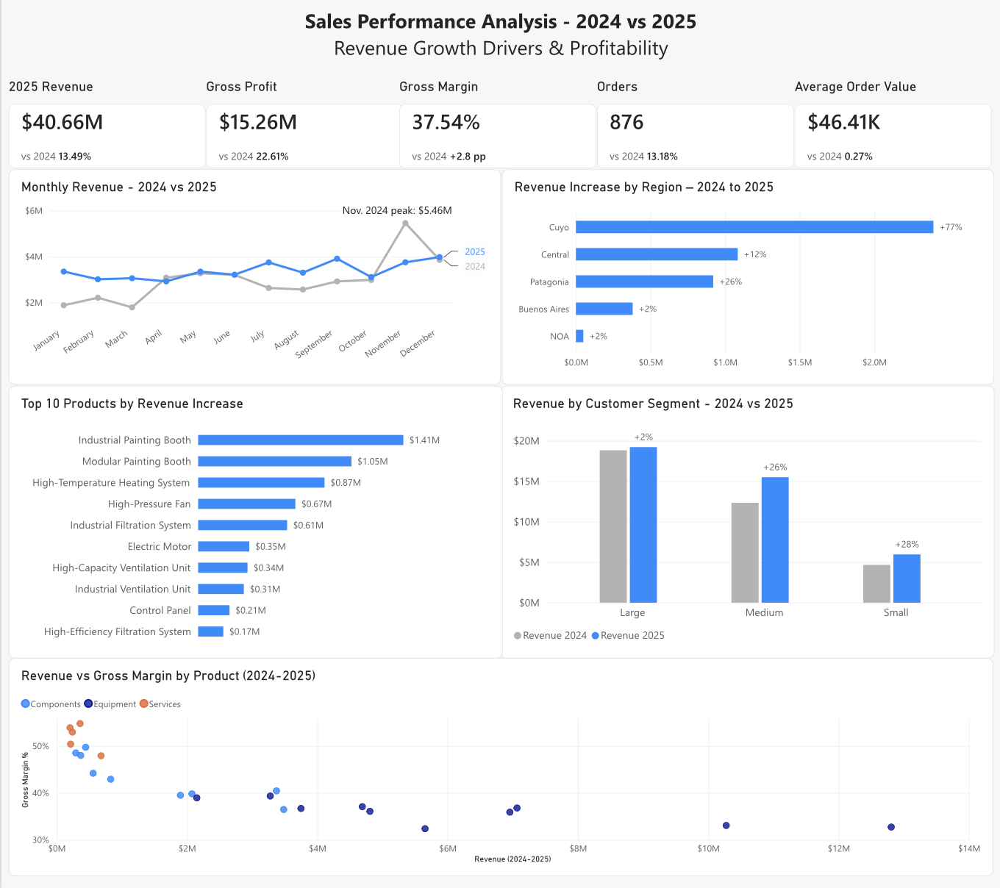

An end-to-end business analytics project analyzing two years of sales data to find what drove revenue growth — across regions, customer segments, product categories and individual products — and how profitability changed along the way.
A company selling industrial equipment, components and services grew its revenue between 2024 and 2025 — but a single growth figure doesn't say where that growth came from, whether it was spread evenly, or whether it came at the cost of profitability.
The goal was to answer one question: how is the business performing, what is driving revenue and profitability, and where are the opportunities for improvement? The analysis compares both years across customer segments, regions, product categories and individual products, while tracking gross margin throughout.
The dataset is synthetic, built for a fictional industrial-equipment company (InduTech Solutions), and includes intentional data-quality issues to clean. All companies, people and figures are fictional.
Inspected and cleaned the raw tables, explored the data, and calculated the first year-over-year figures — which later served as a reference to validate SQL and Power BI results.
Queried the relational tables (orders, customers, products) to answer specific business questions: revenue and growth by region, segment and category, and the products behind the increase.
Built the data model and DAX measures — year-specific revenue, gross profit, orders and average order value, plus growth and margin-change measures — and designed the dashboard around them.
The dashboard gives a one-page overview: headline KPIs compared with 2024, the monthly revenue trend, where growth came from by region, customer segment and product, and how revenue relates to gross margin for each product.

Revenue grew 13.5%, from $35.83M in 2024 to $40.66M in 2025. Gross profit grew faster (+22.6%, from $12.45M to $15.26M), lifting gross margin from 34.74% to 37.54%.
Orders rose from 774 to 876 (+13.2%) — almost exactly in line with revenue — while average order value stayed flat at about $46.4K (+0.3%). Growth came from volume, not from larger orders.
Cuyo was the standout: revenue rose 77% (+$2.40M), about half of the company's total growth. Central added $1.08M (+12%) and Patagonia $0.92M (+26%), while Buenos Aires and NOA grew only 2% each.
Equipment makes up about 80% of revenue and drove about 72% of the growth (+$3.47M, +12%). Components grew fastest (+21%, +$1.28M). Services grew 10% from a small base, but carries the highest gross margin (52%, vs. 41% for Components and 36% for Equipment).
Growth came from Medium (+26%, +$3.16M) and Small (+28%, +$1.29M) customers. Large customers — the biggest segment — were nearly flat (+2%).
Painting booths led the growth: the Industrial Painting Booth (+$1.41M) and Modular Painting Booth (+$1.05M), followed by the High-Temperature Heating System (+$0.87M). The highest-revenue equipment earns the lowest margins (roughly 33–37%), while services and sensors reach about 48–55% on much smaller volumes.
The data shows what changed, not why — so each finding points to a question worth investigating rather than a conclusion.